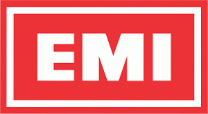

대표 로고대표 브랜드 마크
대표 로고대표 브랜드 마크홈 > 브랜드 매거진 > 애플 레코드
애플 레코드
애플 레코드(Apple Records)는 1968년 비틀즈가 설립한 영국의 음반 레이블이다. 애플 코어(Apple Corps) 산하 레이블로 비틀즈의 음반과 메리 홉킨·배드핑거 등을 발매했다.
산업 분야 미디어·엔터테인먼트 · 공개 등급 디렉토리 · 브랜드 평가 3.2 ★
한눈에 보는 브랜드
애플 레코드(Apple Records)는 1968년 비틀즈가 설립한 영국의 음반 레이블이다. 애플 코어(Apple Corps) 산하 레이블로 비틀즈의 음반과 메리 홉킨·배드핑거 등을 발매했다.
브랜드 관점
애플 레코드는 비틀즈가 직접 세운 레이블로, 1960~70년대 팝·록 음반사의 상징이다. 설립·운영 주체, 주력 장르, 대표 아티스트를 함께 보면 미디어·엔터테인먼트 안에서의 위치가 또렷해진다.
시작과 성장
1968년 비틀즈가 애플 코어의 음반 부문으로 설립했다. 비틀즈 후기 음반과 메리 홉킨, 배드핑거 등을 발매했으며 카탈로그는 이후 EMI를 거쳐 유니버설 뮤직 계열로 관리된다.
브랜드 아이덴티티
애플 레코드의 아이덴티티는 브랜드명, 로고 사용 여부, 업종 언어, 국가적 배경을 중심으로 정리됩니다. 공개 로고 자산은 추후 권리 확인 후 보강할 수 있도록 텍스트 메타데이터 중심으로 관리합니다.
확장 지식
애플 코어(Apple Corps) 산하 레이블로, 카탈로그는 EMI를 거쳐 유니버설 뮤직 계열로 관리된다.
제품과 서비스
록·팝 음반을 발매한다. 비틀즈 음반과 메리 홉킨 'Those Were the Days' 등이 대표적이다.
사람들
비틀즈가 1968년 설립했다.
현재 상태
타임라인
정리된 연도형 이벤트가 없습니다.
BI/CI 변천사
대표 로고대표 브랜드 마크함께 읽을 브랜드

미디어·엔터테인먼트 · 디렉토리EMIEMI는 1931년 영국에서 설립된 '빅4' 메이저 음반사이다.
 미디어·엔터테인먼트 · 디렉토리프라이오리티 레코드
미디어·엔터테인먼트 · 디렉토리프라이오리티 레코드프라이오리티 레코드(Priority Records)는 1985년 브라이언 터너 등이 미국 로스앤젤레스에서 설립한 힙합 중심 음반 레이블이다. N.W.A의 'Strai...
 미디어·엔터테인먼트 · 디렉토리Buddah Records
미디어·엔터테인먼트 · 디렉토리Buddah Records부다 레코드(Buddah Records)는 1967년 미국 뉴욕에서 설립된 음반 레이블이다. 버블검 팝과 소울을 아우른 레이블로 글래디스 나이트 앤 더 핍스 등을 발...
 미디어·엔터테인먼트 · 디렉토리DJM Records
미디어·엔터테인먼트 · 디렉토리DJM RecordsDJM 레코드(DJM Records)는 1969년 영국에서 음악 출판사 딕 제임스 뮤직 산하로 만들어진 음반 레이블이다. 엘튼 존의 초기 영국 음반을 발매한 것으로...
 미디어·엔터테인먼트 · 디렉토리Lookout! Records
미디어·엔터테인먼트 · 디렉토리Lookout! Records룩아웃! 레코드(Lookout! Records)는 1987년 래리 리버모어와 데이비드 헤이즈가 미국 캘리포니아에서 설립한 펑크 레이블이다. 그린데이 초기작을 발매한...
 미디어·엔터테인먼트 · 디렉토리Megaforce Records
미디어·엔터테인먼트 · 디렉토리Megaforce Records메가포스 레코드(Megaforce Records)는 1982년 존·마샤 자줄라 부부가 미국에서 설립한 헤비메탈 레이블이다. 메탈리카의 데뷔작 'Kill 'Em All...
 미디어·엔터테인먼트 · 디렉토리워프 레코즈
미디어·엔터테인먼트 · 디렉토리워프 레코즈워프 레코드(Warp Records)는 1989년 스티브 베킷 등이 영국 셰필드에서 설립한 일렉트로닉·실험음악 레이블이다. 에이펙스 트윈·오테커 등을 배출한 IDM의...
 미디어·엔터테인먼트 · 디렉토리AFM 레코드
미디어·엔터테인먼트 · 디렉토리AFM 레코드AFM 레코드(AFM Records)는 1990년대 독일에서 설립된 헤비메탈 전문 음반 레이블이다. U.D.O.·도로 등을 발매한 독일 메탈 레이블로, 현재 소울푸드...